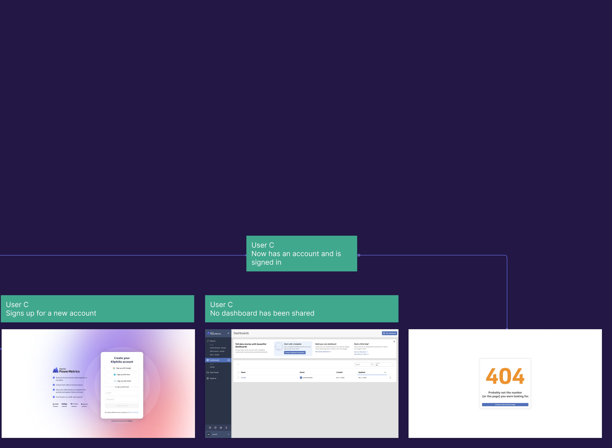
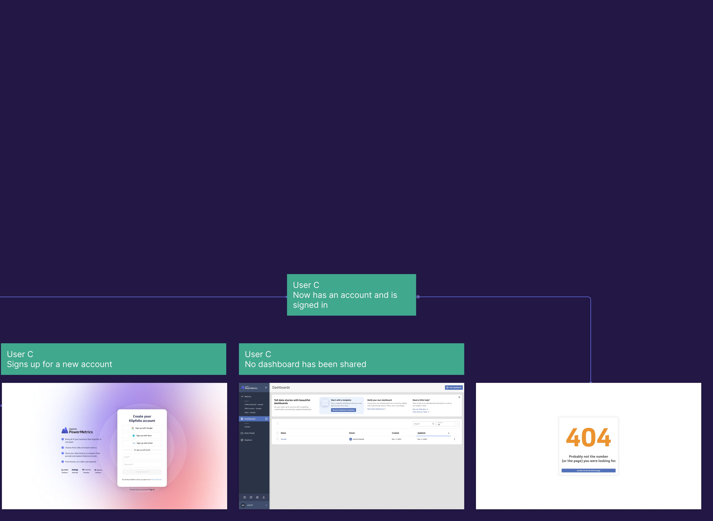
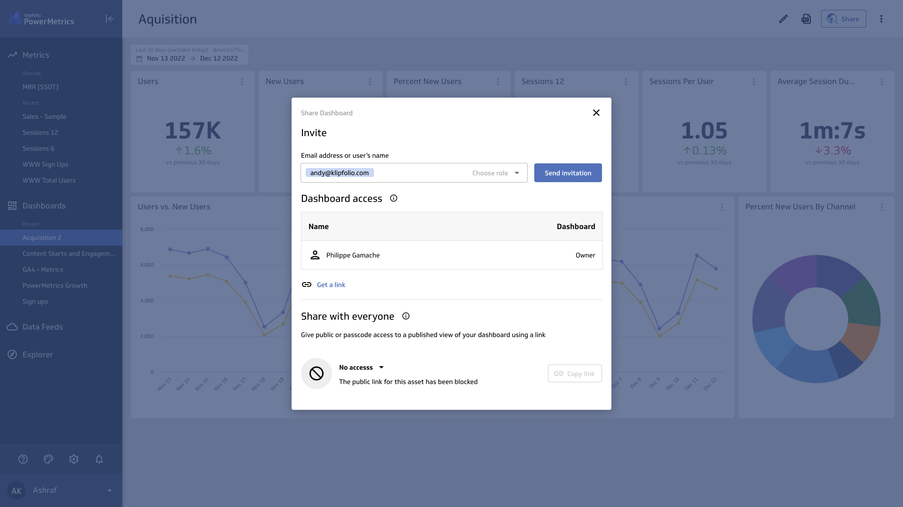
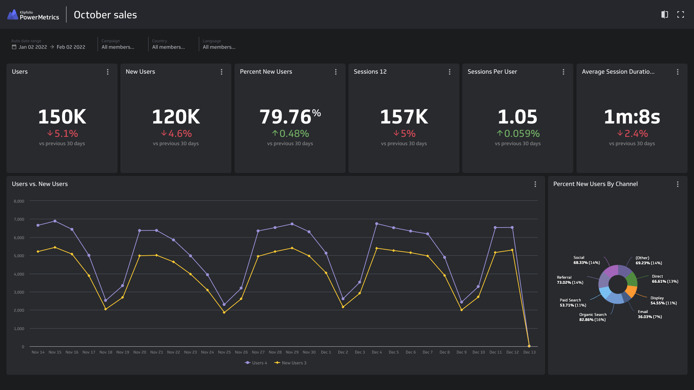

Easy Sharing
Role
Project Lead
UI/UX Design
Team members
Jose Zambrano UX Designer
Nick Venne Developer
Kyle Campbell SRE/Developer
Matt Brown Research Lead
Introduction
Assets sharing and inviting team members are great predictors in users converting (becoming becoming paid customers), however the current experience can leave many users confused and frustrated. We try to tackle that by simplifying the sharing process as well as adding a new powerful feature called Published Views

Opportunity
Our activation rate has been used to determine how well our app is doing for new users. We came to the realization that activation rate is not sensitive to new changes and updates in the app, and not a great predictor of user conversion (free to paid). With the help of our research, we came up with the activation score, an aggregate way of calculating the user engagement based on what activities they do (in the first 7 and 30 days).
Adding a user and sharing were two of the main events that scored very high, and were a leading indicator of conversion.
Heuristic evaluation of the current sharing experience
2% of new users end up adding a team member to their account within 30 days.
25% of users who add a team member, share an asset with them.
After looking at the data, and evaluating the current user experience, we came to the following conclusions:
- Adding user is a hidden part of the app, and the sharing button isn't called out enough.
- Misleading labels and inability to invite users through the sharing of an assets.
- If a user has not been invited to the account, you are unable to simply just enter their email to invite/share with them
- Get a link is a solution the does not work if a user is not already a part of the account
- Sharing a dashboard where not all the metrics are also shared is disappointing experience and can occur very easily.
- If a user has already an account, you are unable to share with them or invite them to be part of your company. Resulting in a dead-end and a frustrating experience
An example of a user sharing a dashboard with 3 different types of users: One who is part of the company account, one who has a PowerMetric account but not part of the coompany account, and finally one who does not have a PowerMetric account.
 

Scroll to the right to see the full user flow.
Sharing a dashboard with a user who does not have access to all the metrics is a broken and frustrating experience

If a user has already an account, you are unable to share with them or invite them to be part of your company. Resulting in a deadend and a frustrating experience

Proposed solution
- Simplify inviting a user and sharing an asset within one unifiied UI.
- Simplify the users roles
- Simplify the asset sharing hierarchy
- Simplify sharing an asset using a link and requesting access
- Allow users to share reports and dashboards beyond Klipfolio PowerMetric
- Bonus feature: Published views in dark mode which can help with users using the feature as a TV mode or for presentations.
One unified UI for all things sharing

Sharing and inviting users within one UI
Allow sharing through a link and requesting access if the asset hasn't been shared.

Allow users to share reports and dashboards beyond Klipfolio PowerMetric
Final concept
One unified UI for all things sharing
Sharing and inviting users within one UI
Allow sharing through a link and requesting access if the asset hasn't been shared.
Allow users to share reports and dashboards beyond Klipfolio PowerMetric
Success Metrics
After looking at the data, and evaluating the current user experience, we came to the following conclusions:
- An increase in both adding users and assets sharing
- An increase in number of users per account
- An increase in conversion due to reaching users limits